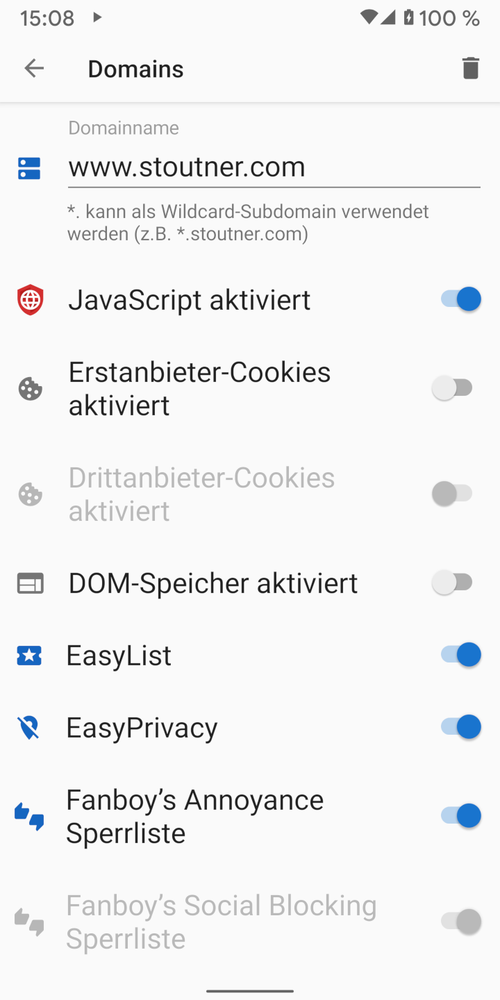
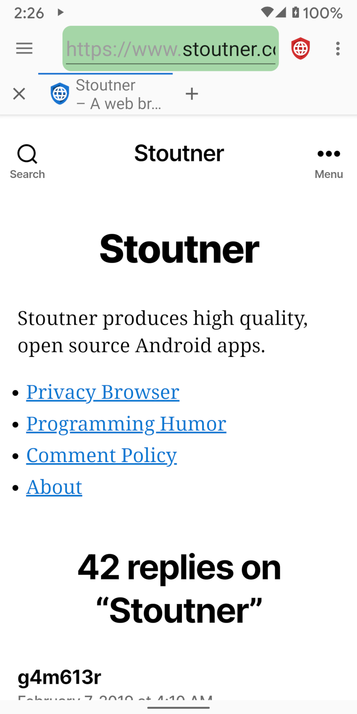

Clear Browser’s Vorgabe ist das Surfen ohne JavaScript, Cookies und DOM-Speicher. Allerdings gibt es Websites, die nur korrekt funktionieren, wenn eine oder mehrere dieser Funktionen aktiviert sind. Sie können daher eine oder mehrere dieser Funktionen automatisch aktivieren, wenn Sie eine solche Seite (Domain) besuchen.
Wenn Sie ein Seite besuchen, für die zuvor bereits entsprechende Einstellungen getätigt wurden, wird der Hintergrund der URL-Textbox grün dargestellt.
